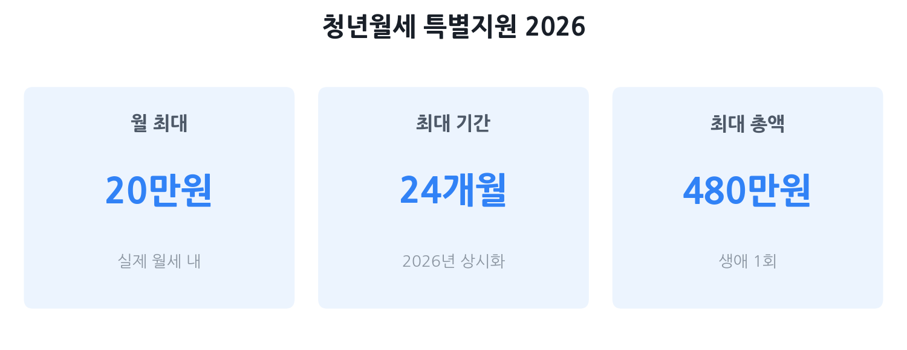

청년월세 특별지원 2026
— 자격·금액·원가구 소득·신청 완전 가이드
자취 청년에게 매달 최대 20만 원씩, 최대 24개월(총 480만 원)을 현금으로 지원하는 국토교통부 청년월세 지원사업. 2026년부터 상시 신청으로 바뀌어 지금 당장 신청할 수 있습니다. 단 '원가구(부모) 소득 요건'을 모르고 덜컥 신청하면 탈락 통보를 받을 수 있어요. 이 글에서 자격 자가진단부터 흔한 탈락 사유, 지자체 사업과의 중복 여부까지 한 번에 정리합니다.
- 월세가 부담스러운 만 19~34세 자취 청년
- "부모님 소득 때문에 나는 탈락하는 거 아닐까" 걱정되는 분
- 이미 지자체 월세 지원을 받고 있는데 국토부 지원도 가능한지 궁금한 분
- 신청 기간이 따로 있는지, 지금 바로 해도 되는지 모르는 분

청년월세 지원이 뭐예요? — 2026년 달라진 점
청년월세 지원사업은 국토교통부가 운영하는 주거비 지원 제도입니다. 월세로 살고 있는 무주택 청년에게 실제 월세의 일부를 매달 본인 통장에 현금으로 넣어줍니다. 정식 명칭은 '청년월세 한시 특별지원'이지만, 2026년부터 계속 사업으로 전환돼 매년 신규 수혜자를 모집합니다.
2026년에 달라진 핵심 3가지
- 상시 신청 전환: 과거에는 정해진 기간(1차·2차)에만 신청할 수 있었지만, 2026년부터는 연중 언제든 신청 가능합니다(예산 소진 전까지).
- 지원 기간 확대: 최대 12개월에서 최대 24개월로 두 배 늘었습니다. 총 지원 한도도 240만 원에서 480만 원으로 늘어났습니다.
- 청약통장 요건 삭제: 2024~2025년에는 청약통장 가입이 필수 조건이었지만, 2026년부터 이 요건이 사라졌습니다.
나는 받을 수 있을까? — 자격 자가진단
아래 요건을 모두 충족해야 지원 대상이 됩니다. 하나라도 빠지면 탈락합니다.
| 요건 | 기준 | 비고 |
|---|---|---|
| 나이 | 만 19세 이상 ~ 만 34세 이하 | 병역 이행 기간 최대 6년 차감 가능 |
| 거주 형태 | 부모와 별도 거주하는 독립 가구 · 무주택 · 월세 임차인 | 공공임대주택(LH 행복주택 등) 거주자 불가 |
| 청년(본인) 가구 소득 | 기준 중위소득 60% 이하 | 1인 가구 기준 월 약 153만 원 이하 (2026년) |
| 청년 가구 재산 | 총재산가액 1억 2,200만 원 이하 | 예·적금, 부동산, 자동차 등 합산 |
| 원가구(부모 포함) 소득 | 기준 중위소득 100% 이하 | 만 30세 이상·기혼·미혼부모는 심사 면제 (아래 설명 참조) |
| 원가구 재산 | 총재산가액 4억 7,000만 원 이하 | 부모 포함 가구 기준 |
| 주택 상한 | 임차보증금 5,000만 원 이하 · 월세 70만 원 이하 | 초과 시 지원 제외 가능 (지자체별 상이) |
1인 가구 100% = 약 256만 원 / 60% = 약 154만 원
2인 가구 100% = 약 420만 원 / 60% = 약 252만 원
3인 가구 100% = 약 536만 원 / 60% = 약 322만 원
(출처: 보건복지부, 2026년 기준 중위소득 고시)
핵심 함정: 원가구 소득 요건 완전 해설
청년월세 지원에서 가장 많이 걸리는 함정은 원가구(부모 포함) 소득 요건입니다. 본인 소득은 낮아도 부모님 소득이 기준 중위소득 100%를 초과하면 탈락할 수 있습니다. 이 구조를 이해하는 것이 신청 전 가장 중요한 확인 사항입니다.
원가구가 뭔가요?
'원가구'란 청년 본인 독립가구에 1촌 이내 직계혈족(부·모)을 합친 가구를 말합니다. 즉 본인이 혼자 자취해도 부모님 소득과 재산이 심사에 함께 반영됩니다. 기준 중위소득 100%(2인 기준 약 420만 원, 3인 기준 약 536만 원)를 초과하면 탈락입니다.
원가구 소득을 '안 보는' 경우 — 이게 핵심
다음에 해당하면 원가구 소득 심사가 면제됩니다. 부모님 소득이 높아도 본인 가구 소득 요건만 충족하면 됩니다.
- 신청일 기준 만 30세 이상인 경우
- 혼인 또는 이혼한 경우
- 미혼부모인 경우
- 만 30세 미만 미혼이지만 기준 중위소득 50% 이상의 소득이 있고, 시·군·구청장이 독립 생계 유지를 인정한 경우
원가구 심사 면제 여부 자가진단
| 내 상황 | 원가구 소득 심사 |
|---|---|
| 만 30세 이상 (미혼 포함) | 면제 — 본인 가구 소득만 봄 |
| 만 30세 미만, 기혼 또는 이혼 | 면제 — 본인 가구 소득만 봄 |
| 만 30세 미만, 미혼부모 | 면제 — 본인 가구 소득만 봄 |
| 만 30세 미만, 미혼, 중위소득 50% 이상 소득 + 독립 생계 인정 | 면제 가능 — 관할 시·군·구청 확인 필요 |
| 만 30세 미만, 미혼, 소득 없거나 위 조건 미해당 | 부모 소득·재산 동시 심사 |
지자체 월세 지원과의 비교 및 중복 여부
서울·경기·부산·인천 등 많은 지자체가 자체적으로 청년 월세를 지원합니다. 국토부 사업과 지자체 사업을 동시에 받을 수 있는지가 자주 묻는 질문입니다.
원칙: 동시 수혜 불가
지자체 시행 월세지원 사업을 수혜 중인 경우, 국토부 청년월세 지원 신청이 거절됩니다. 반대로 국토부 지원을 받고 있다면 지자체 사업에도 신청할 수 없습니다. 수혜가 종료된 뒤에는 재신청이 가능합니다.
| 구분 | 국토부 청년월세 지원 | 서울시 청년월세 지원 (예시) |
|---|---|---|
| 운영 주체 | 국토교통부 · 복지로 | 서울시 (지자체별 상이) |
| 월 지원액 | 최대 20만 원 | 최대 20만 원 (서울시 기준) |
| 지원 기간 | 최대 24개월 | 최대 12개월 (서울시 기준) |
| 소득 요건 | 청년가구 중위 60% + 원가구 중위 100% | 지자체별 상이 (별도 공고 확인) |
| 신청 방법 | 복지로(온라인) / 주민센터(방문) | 지자체 홈페이지 / 주민센터 |
| 중복 수급 | 불가 — 둘 중 하나만 선택 | |
주거급여와의 중복
주거급여를 이미 받고 있어도 중복 신청이 부분적으로 가능합니다. 다만 주거급여 중 월차임분을 제외한 차액(최대 20만 원)만 지원됩니다. 주거급여 수급자라면 두 사업을 동시에 받는 방식이 허용됩니다.
흔한 탈락 사유 6가지
신청 후 탈락 통보를 받는 이유를 정리했습니다. 신청 전 하나씩 체크하세요.
- ① 원가구(부모) 소득·재산 초과. 만 30세 미만 미혼 청년이면서 부모님 소득이 중위소득 100% 초과이거나 재산이 4억 7,000만 원을 넘으면 탈락합니다. 가장 많은 탈락 사유입니다.
- ② 지자체 월세 지원 수혜 중. 이미 지자체 사업을 받고 있으면 중복 신청이 안 됩니다. 수혜 종료 후 재신청해야 합니다.
- ③ 공공임대주택 거주. LH 행복주택, 국민임대, 통합공공임대 등 공공임대에 살고 있으면 지원 대상에서 제외됩니다.
- ④ 전대차(방 쪼개기) 구조. 임대인과 직접 임대차계약을 맺지 않은 전대차 방식(단, 임대인과 별도 계약 체결 시 가능)은 원칙적으로 불가합니다.
- ⑤ 실거주지와 주민등록 주소지 불일치. 계약서 주소지와 주민등록 주소지가 달라도 탈락합니다. 전입신고를 먼저 하고 신청해야 합니다.
- ⑥ 주택 소유 또는 분양권·입주권 보유. 청년 가구 내 누구라도 주택을 소유하고 있으면 지원 대상에서 빠집니다.
신청 방법 · 필요 서류 · 지급 흐름
온라인 신청과 방문 신청 두 가지 방법이 있습니다. 온라인이 편리하지만, 서류 준비가 필요한 경우 주민센터 방문이 나을 수 있습니다.
온라인 신청 (복지로)
- 복지로(bokjiro.go.kr) 접속 → 로그인
- 서비스 신청 → 복지서비스 신청 → 복지급여 신청 → 기타
- '청년월세 한시 특별지원' 선택
- 신청서 작성 및 서류 업로드
방문 신청 (주민센터)
주소지 관할 행정복지센터(주민센터)에 직접 방문합니다. 불가피한 경우 법정대리인, 동일 세대원, 배우자·직계 존비속이 대리 신청할 수 있습니다(위임장 필지).
주요 준비 서류
- 임대차계약서 사본
- 월세 납부 증빙(계좌이체 내역 등)
- 주민등록등본 (청년 본인 및 원가구)
- 건강보험료 납부확인서 (소득 확인용)
- 금융정보 제공 동의서 (재산 조회용)
소득과 재산은 대부분 시스템으로 자동 조회되므로 별도 서류를 요구하지 않는 경우가 많습니다. 단 프리랜서·일용직 등 소득 증빙이 복잡한 경우 추가 서류를 요청받을 수 있습니다.
지급 흐름
- 신청 — 복지로 또는 주민센터
- 요건 심사 — 시·군·구청에서 소득·재산·주거 요건 및 중복 수혜 여부 확인 (수개월 소요)
- 선정 통보 — 문자 또는 복지로 알림
- 소급 지급 — 신청월(2026년 1차의 경우 5월)분부터 매달 본인 계좌로 입금
지원 기간 중 이사를 해도 새 임대차계약서를 제출하고 변경 신청하면 남은 기간 계속 받을 수 있습니다.
자주 묻는 질문
Q. 부모님 소득이 중위소득 100%를 넘으면 무조건 탈락인가요?
만 30세 이상이거나, 혼인·이혼한 경우, 미혼부모인 경우는 원가구 소득을 보지 않고 본인 가구 소득만 봅니다. 만 30세 미만이라도 기준 중위소득 50% 이상 소득이 있고 시·군·구청장이 독립 생계를 인정하면 원가구 소득 심사가 면제됩니다. 조건에 따라 다르니 먼저 복지로 모의계산기로 확인하세요.
Q. 지자체 청년월세 지원을 받고 있으면 국토부 지원도 동시에 받을 수 있나요?
원칙적으로 불가능합니다. 지자체 월세 지원 수혜 중이면 국토부 청년월세 지원 신청이 거절됩니다. 수혜 종료 후 재신청은 가능하므로, 두 사업 중 기간·금액이 유리한 쪽을 먼저 선택하는 것이 좋습니다.
Q. 주거급여를 이미 받고 있으면 청년월세 지원과 중복 수급이 되나요?
부분 중복이 가능합니다. 주거급여 중 월차임 지원액을 빼고 남은 부분(최대 20만 원까지)을 청년월세 지원으로 추가 받을 수 있습니다. 예를 들어 주거급여로 월 10만 원을 받는다면 청년월세 지원으로 최대 10만 원을 더 받을 수 있습니다.
Q. 2026년에는 신청 기간이 따로 있나요, 아무 때나 해도 되나요?
2026년부터 상시 신청 체계로 전환됐습니다. 1차 접수는 2026년 3월 30일부터 시작됐고, 이후에도 예산 범위 내에서 연중 신청을 받을 예정입니다. 단 예산 소진 시 조기 마감될 수 있으니 자격이 된다면 빨리 신청하는 것이 유리합니다.
Q. 보증금이 5,000만 원을 넘는 반전세에 살고 있어요. 신청이 안 되나요?
보증금 5,000만 원·월세 70만 원은 지원 대상 주택의 상한 기준입니다. 보증금이 이를 초과하면 지원 대상에서 제외될 수 있습니다. 다만 지자체별로 기준이 다를 수 있으므로, 신청 전 복지로 모의계산 또는 주민센터 확인을 권장합니다.
본 글은 국토교통부, 복지로(bokjiro.go.kr), 마이홈포털(myhome.go.kr), 토스뱅크 공개 자료, 삼쩜삼 블로그(2026년 4월 공개) 등을 바탕으로 2026년 6월 기준 작성됐습니다. 지원 요건·금액·기간은 연도별 예산 및 시행 지침에 따라 변경될 수 있으니 신청 전 복지로 또는 관할 주민센터에서 최신 공고를 반드시 확인하세요. 지자체 자체 사업은 각 지자체 공고 기준이 우선합니다. 본 페이지는 정보 제공 목적이며 지원을 보장하지 않습니다.